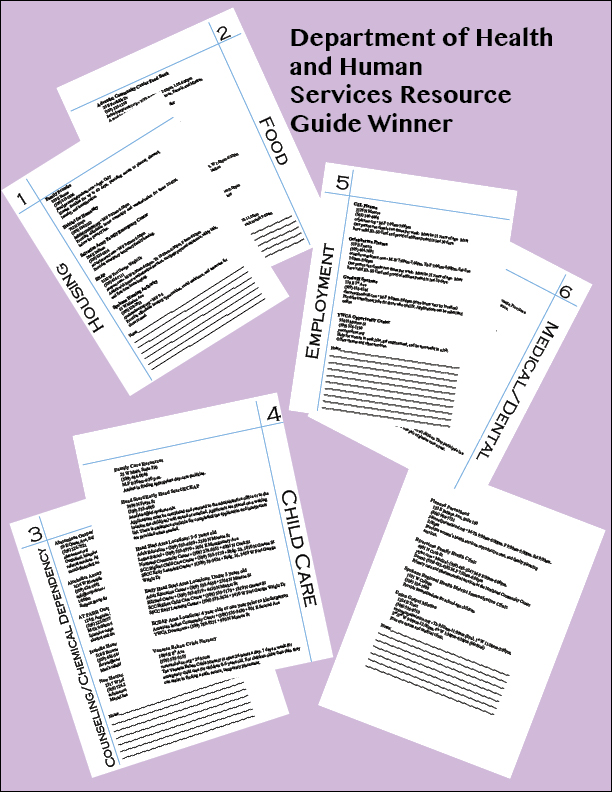

Teri Simpson

I am in Technical Communications
I write, edit and design technical documents of any kind. I help people streamline their data. Do you notice how much technology is advancing, yet the writing seems to be getting worse and more convoluted? That is where I come in and make sense out of the chaos.
Community Project Winner
Grant Writer for the Y of the Inland Northwest
Education
Eastern Washington University BA Technical Communications College of the Sequoias Transfer Journalism
Skillset
Technical writing
Converting complicated documents into readable, concise material, researching, editing
Design
Layout for print newspapers, private businesses and magazines
Photography
Low light photographyin clubs, festivals and firedancing events
Official photographer for Conscious Culture Festival, Kaleida Kinetic hoop troupe, Vertical Elements Entertainment, and Paddles and Pasties burlesque.Tools
I frequently use Adobe InDesign, Illustrator, Photoshop, Dreamweaver, Edge
Microsoft Publisher, Word, Excel for non-profit orgs
Github, Sublime Text for web publishing